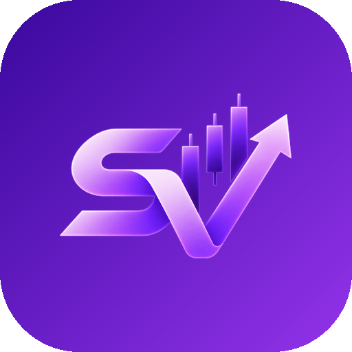

ShotockViz — App Icon / Favicon Set
Generated from the brand mark, 2026-09-05. Checkerboard = transparency.
Favicon scale (simplified "S" glyph, ≤64px)
App icon scale (full "SV" mark, >64px)
96
128
180 (apple-touch)
192 (PWA)

512 (scaled down)
Square variant (no baked-in corner rounding — for iOS/Android OS masking)
 square-180
square-180apple-touch-icon
Android adaptive icon layers
background
foreground (transparent)
PWA maskable (extra safe-zone padding)
maskable-192
maskable-512
Source marks (transparent, no icon chrome)
logo-mark-full.png
logo-mark-simplified.png
On dark background (app context check)